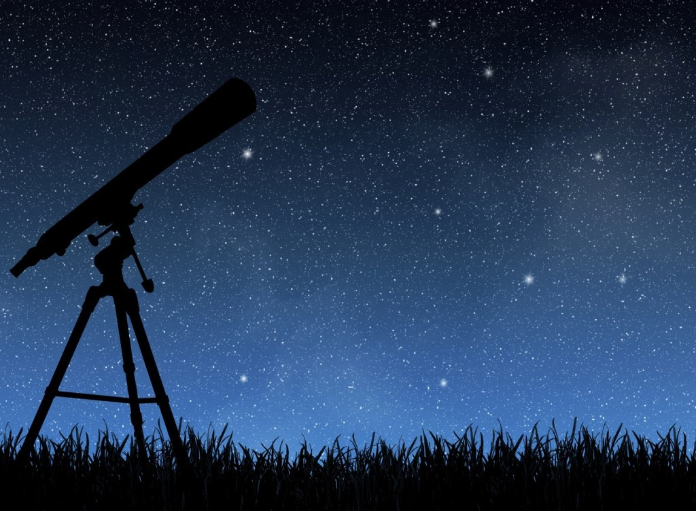
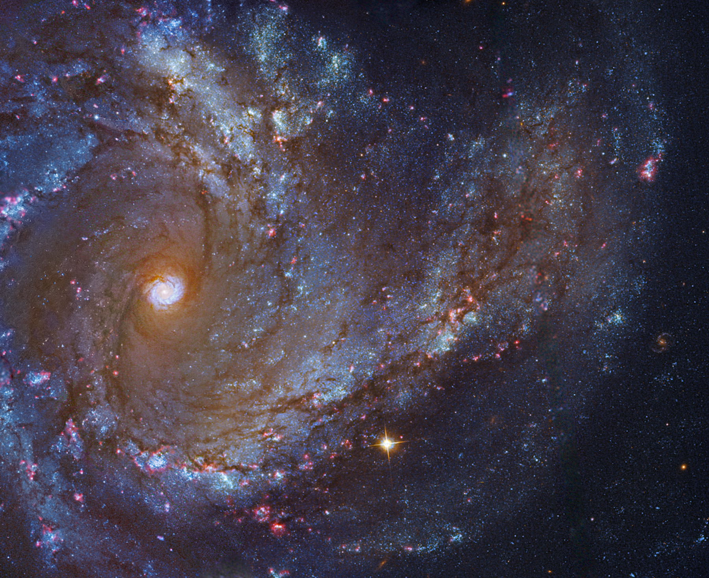
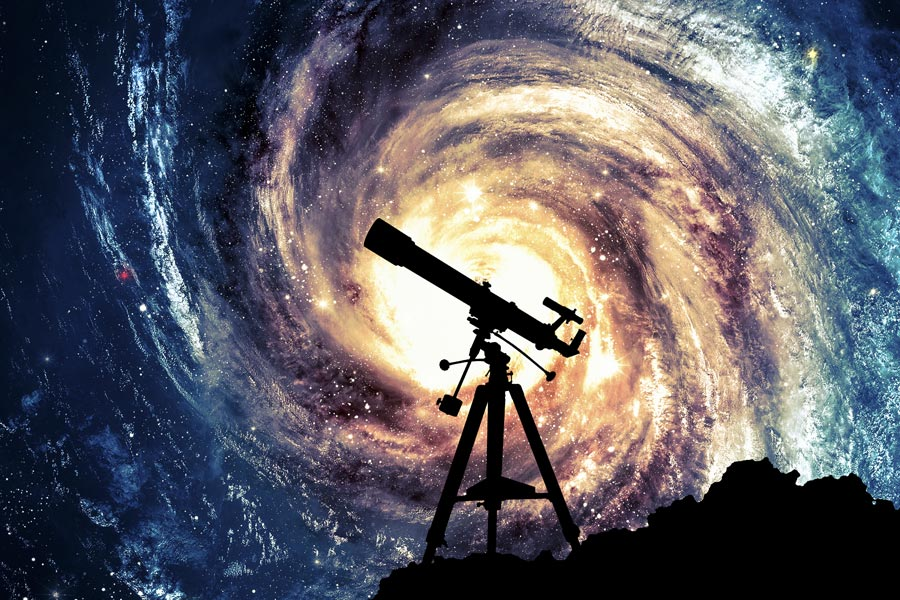
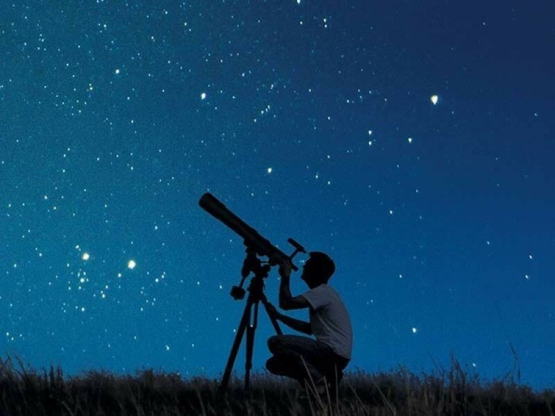

Астрономия
Астрономия – это наука, которая занимается изучением строения
Вселенной. Она изучает расположение, движение, физическую природу, происхождение и эволюцию небесных тел и систем. Фундаментальные свойства окружающей нас Вселенной также являются предметом изучения астрономии. Если более конкретно, то астрономия изучает Солнце и другие звезды, планеты и их спутники, черные дыры, галактики и туманности, квазары, астероиды и многое другое. Астрономия – это такая наука, которая призвана объяснить непонятные явления, происходящие во Вселенной и объясняющие нашу жизнь.

Когда появилась Астрономия?
Можно сказать, что астрономия появилась в тот момент, когда человек начал задавать себе вопросы об устройстве нашего мира. Первые представления о Вселенной были весьма примитивными, они исходили из религии. Уже с 6-4 в. До н.э. люди начали изучать звезды и их движение. С развитие математических знаний и физических исследований совершенствовались представления человека о Вселенной. Первая астрономическая революция произошла в 1500 г. до н.э. – именно тогда возникла сферическая астрономия, появились точные календари, а значит астрометрия. Жрецы Вавилона, которые составляли астрономические таблицы, календари племен майя, сведения, сохранившиеся со времен Древнего Китая и Древнего Египта – все это стояло у истоков астрономии. Впервые древнегреческие ученые, в частности Пифагор, предположили, что Земля имеет форму шара, Аристарх Самосский – что земля вращается вокруг Солнца. Основным достижением этого периода является возникновение геоцентрической теории мира. Существенный вклад в развитие астрономии внес Галилей.
С появлением телескопов ученые открыли Млечный путь, позже множество галактических пространств, а с начала 20 века развитие астрономии пошло семимильными шагами. Самым большим достижением современных ученых стало возникновение теории об эволюции Вселенной, согласно которой она расширяется с течением времени.

Из каких разделов состоит астрономия?
Астрономия как наука о Вселенной включает в настоящее время несколько разделов:
- Небесная механика. Этот раздел определяет массу и форму звезд, занимается изучением законов их передвижения под воздействием сил тяготения.
- Теоретическая астрономия. Ученые, занимающие теорией, разрабатывают компьютерные и аналитические модели небесных тел и явлений.
- Астрофизика. Она изучает физические и химические свойства космических объектов.
- Археоастрономия. Этот раздел изучает астрономическую историю и выясняет, какие существовали космические знания в древние времена.
Кроме того, существует разделы, которые изучают закономерности пространственного расположения звезд и планет, рассматривают эволюцию небесных тел.

Основа астрономии – это наблюдения
<Астрономы не могут ставить опыты, как, к примеру, это могут делать физики. Почти вся информация, которая имеется у астрономов о небесных телах, получена с помощью электромагнитного излучения.
Наблюдения за Вселенной очень сложный и трудоемкий процесс, он требует внимательности, регулярности и сосредоточенности. Поэтому разговор о единице измерения, как о метрах и километрах в астрономии просто невозможен.
При изучении солнечной системы используется астрономическая единица. Это размер большой полуоси орбиты Земли: 1 а.е. = 149 миллионов километров. Более крупные единицы длины – световой год и парсек, а также их производные (килопарсек, мегапарсек) – нужны в звездной астрономии и космологии. Световой год – расстояние, которое проходит луч света в вакууме за один земной год. Он равен примерно 9,5•1015 м. Парсек исторически связан с измерением расстояний до звезд по их параллаксу и составляет 1 пк = 3,263 светового года = 206 265 а.е. = 3,086•1016 м.
Методы, которые используются в других науках, таких как математика и физика, широко применяются и в астрономии. Космос является единственным местом, где вещество способно существовать при температурах в сотни миллионов градусов и почти при абсолютном нуле, в пустоте вакуума и в нейтронных звездах. В последнее время достижения астрономии стали использоваться в геологии и биологии, географии и истории.
